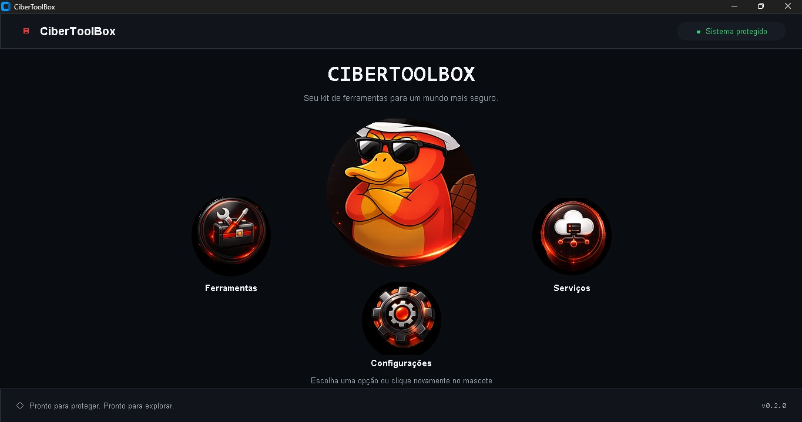

Sistema protegido
As ferramentas certas
para um mundo mais seguro.
CiberToolBox reúne recursos essenciais para explorar, configurar e proteger seu ambiente em um único lugar.
Gratuito para baixar Windows 10 ou superior
